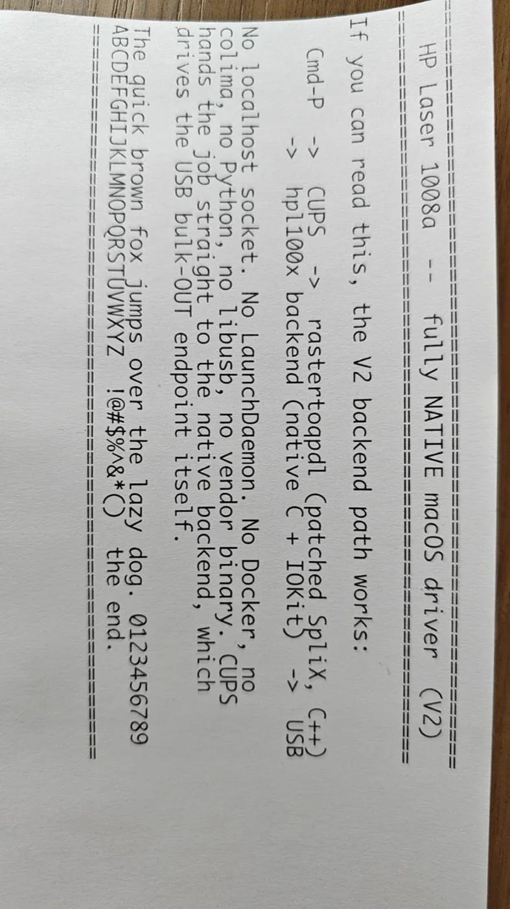

HP Laser 1008a macOS driver
用原生 macOS 打印链路恢复无官方 macOS 驱动的 HP Laser 系列用途。
- 驱动修复
HP Laser 1003/1006/1008 a/w USB + Apple Silicon macOS 26（作者测试范围）
AI 开发过程须由作者原始材料支持；USB 测试不代表 Wi-Fi 已验证。


这是一条 具体改造路线 · 最近核对公开资料 2026-10-20
从闲置到能用，它改变了什么
原来卡在哪里
作者在 Apple Silicon Mac 上遇到 HP Laser 1008a 驱动不可用的问题，打印机硬件仍可工作。
改完能做什么
通过 SpliX 衍生转换与原生 CUPS/IOKit 连接，恢复特定 HP Laser 系列的 USB 打印。
作者在 X 表示使用 Claude 并经过约 30–40 次提示与试错，公开过程与代码。README 的作者验证范围为 Apple Silicon、macOS 26 与 HP Laser 1003/1006/1008 a/w 的 USB 路径。不能据此推断 Wi-Fi、所有 HP 型号或 Intel Mac 都可用。安装涉及管理员级系统配置，卸载脚本与许可拆分同样需要阅读。
适合你，如果
设备和系统版本匹配，能检查安装脚本并处理 CUPS 打印队列的人。
先别选，如果
只用 Wi-Fi 打印、设备不在作者测试范围，或无法接受系统配置变动的人。
做完以后这样检查
- 记录 macOS、CPU、USB 设备身份和驱动版本
- 测试真实文档、多页任务、重启后打印与错误恢复
- 检查卸载路径；不把打印成功推导为所有设备功能受支持
这是给你的验收清单；KitAgain 目前还没有亲手完成这些硬件测试。
你要准备什么
- 怎么改
- 安装驱动
- 上手难度
- 进阶
- 拆机
- 不需要
- 焊接
- 不需要
- 云 API / 服务
- 运行时不需要
- 成本金额
- 待核价 / UNKNOWN
还可能要花的钱
- USB 数据线
- 兼容 Mac
这些价格还没有核实。软件开源，也可能仍要买转接件、主板、存储，或承担电费和服务费。
最坏会怎样，怎么退回来
数据丢失风险: 可能发生; 刷坏或无法启动的风险: 依操作路径. 这是按操作路线给出的提醒，还没有在每台设备上实测。
仓库提供 uninstall.sh，README 解释如何撤销对 ippusbd 的更改；安装器需要管理员权限。
这条信息现在可信到哪一步
E2 · 作者实机陈述 / 演示
作者 README 声明 Apple Silicon macOS 26 经 USB 测试，给出安装、卸载和打印链路分析；作者自托管 Claude 会话页支持 AI 辅助开发归类。X 原文另行记录访问状态。 已浏览作者 X 主帖及回复，确认作者称使用 Claude 并多轮试错。
KitAgain 目前没有亲手测试这台设备，也没有把别人的成功截图当成我们的复现。
- 维护状态
- 仓库未归档
- GitHub 最后 push
- 2026-10-04T10:39:56Z
未归档或近期 push 不能证明型号无故障；镜像迁移也不等于停止维护。
根许可证或 README 声明不代表固件、模型、品牌和第三方组件均采用相同许可。
项目账号与已核实作者主页
- Kuberwastaken · GitHub ↗ — 源码仓库所有者账号；不据此推断其为唯一作者
- Kuber / kuberwastaken · X ↗ — HP Laser macOS 驱动作者；原帖说明了多轮 AI 辅助开发过程
仓库所有者账号用于追溯项目来源；作者社交账号只有在项目资料、仓库或作者主页能确认归属时才收录。
这些链接分别能帮你做什么
- 上游项目文档 ↗2026-10-20
先用它了解项目能做什么、怎样开始，以及作者写明的限制。
https://github.com/Kuberwastaken/hp-laser-1008a-macos/blob/main/README.md - 作者过程记录 ↗2026-10-20
作者在这里记录了实际制作过程、取舍或结果。
https://cdn.kuber.studio/chat/hp-laser-1008a-driver 适合补看作者当时展示的设备和过程；本目录已读正文，但没有把视频画面当成已核验结果。
https://x.com/kuberwastaken/status/2089377982536388964适合补看作者当时展示的设备和过程；本目录已读正文，但没有把视频画面当成已核验结果。
https://x.com/kuberwastaken/status/2089721130127094071
原始页面可能使用中文或英文。准备动手时，再按你的准确型号、固件和地区版本核对一次。